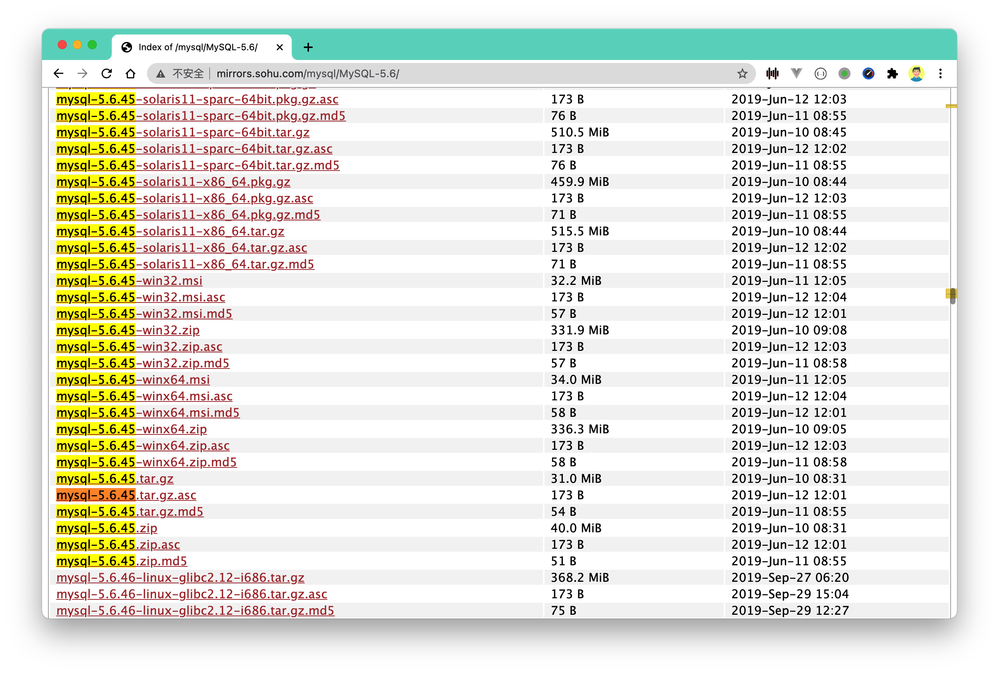
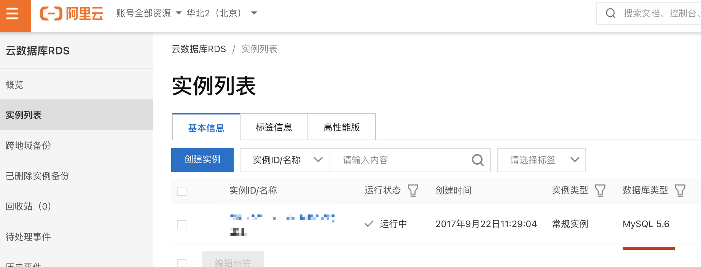
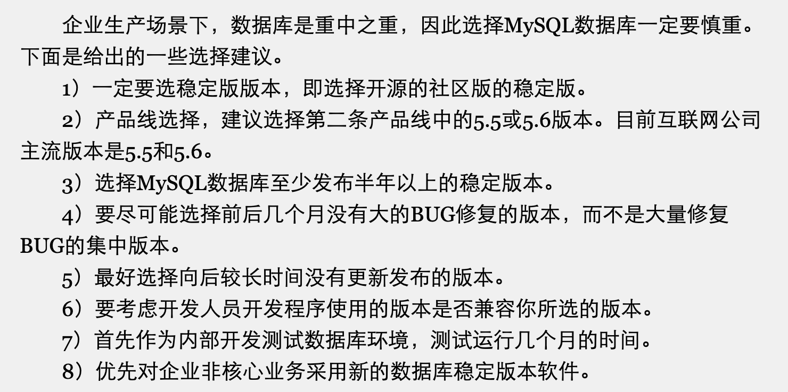
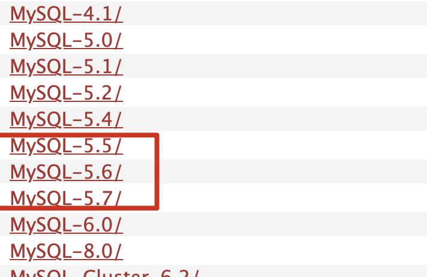
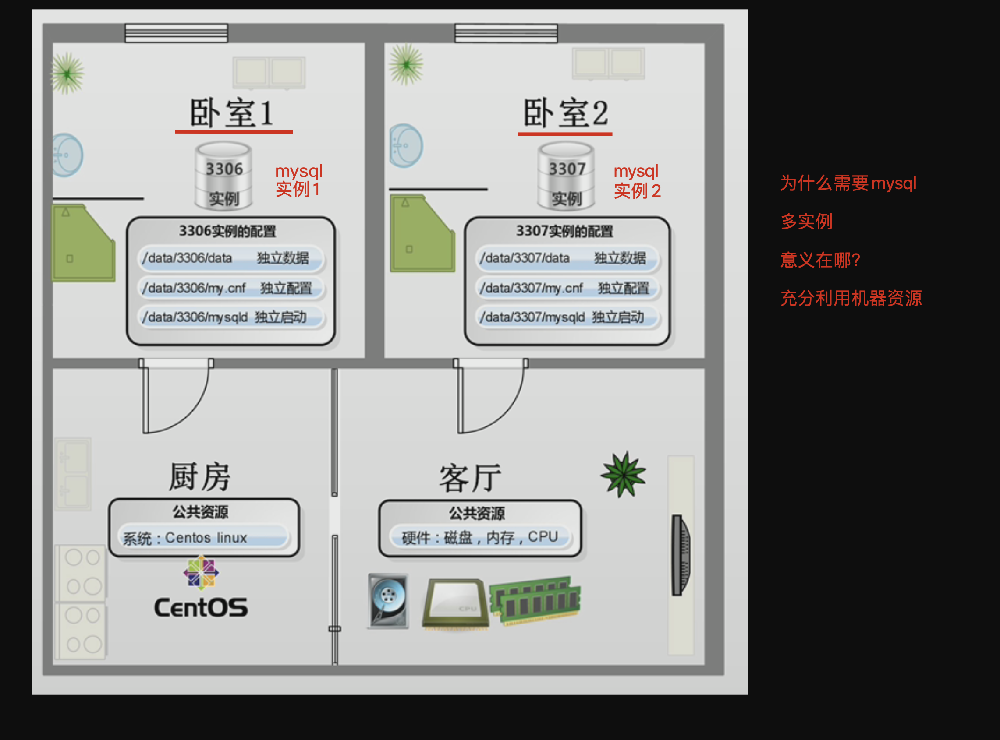
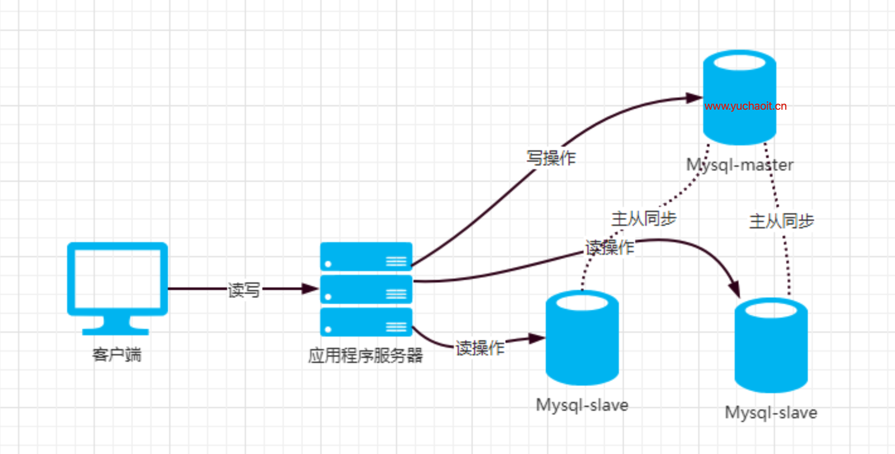
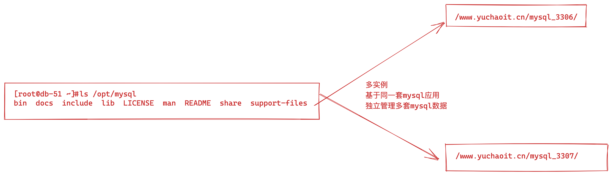

02-2-mysql基础实践
MySQL数据库基础实践
使用mysql是不二的选择，接着就跟着超哥学起来了。。
为什么mysql用的这么多
性能强悍，服务稳定，很少因为mysql自身宕机
开放源代码，社区很活跃，出了问题可以很快得到解决方案
mysql软件体积优化了N次后，安装包也很小，部署简单，配置易懂，历史悠久，文档也多
mysql得到了全世界的公司严重，选它没问题
LAMP、LNMP、都是和mysql架构
mysql便于编程语言，基于API直接获取数据，如java、python、golang等
版本选择
企业版
MySQL企业版由MySQL AB公司内部专门的人员负责开发及维护，但同时也会吸纳社区人员编写的优秀代码及算法，并且由他们严格按照软件测试流程对这些采纳的代码进行测试，确定没有问题之后才会进行发布。简单地说，MySQL企业版是由MySQL公司内部发布的，它参考了社区版的先进代码功能和算法，是MySQL公司的赢利产品，需要付费才能使用及提供服务支持，稳定性和可靠性无疑都是最好的，当然了，企业腰包得够鼓才能买得起。某知名分类门户网站2008年就购买过MySQL企业版，价格不比那些闭源的商业数据库便宜，也是大几十万。
社区版
MySQL社区版则是由分散在世界各地的MySQL开发者、爱好者以及用户参与开发与测试的，包括软件代码的管理、测试工作，也是他们在负责。社区也会设立BUG汇报机制，收集用户在使用过程中遇到的BUG情况，相比于企业版，社区版的开发及测试环境没有那么严格。
选哪个
mysql是成熟产品，企业版和社区版在性能方面区别不大，对于我们学习而言，社区版即可。它们的区别可以如下了解
- 企业版对代码的管理、测试更严格、稳定性更好
- 企业版不遵循GPL开源协议，而社区版遵循，可以免费用
- 企业版可以购买额外的收费服务，如7*24的技术支持，有钱任性。
- 社区版的安全性，稳定性，无法像企业版有及时的维护、技术支持。
MySQL特点
支持多种操作系统，Windows、MacOS、Linux等 支持多种语言API，如C、C++、Python、PHP、Java等 支持多线程、充分利用硬件资源 支持多种存储引擎
mysql就是一个基于socket编写的C/S架构的软件
客户端软件 mysql自带：如mysql命令，mysqldump命令等 python模块：如pymysql
MySQL服务端-客户端
先看下什么是B/S和C/S架构。
B/S是Browser/Server指浏览器和服务器端，在客户机不需要装软件，只需要装一个浏览器。
C/S是Client/Server指客户端和服务器，在客户机端必须装客户端软件及相应环境后，才能访问服务器
MySQL是基于客户端-服务端的运行模式数据库，服务端负责数据处理，运行在数据库服务器上。
用户通过发送增删改查等请求，发送给客户端软件，然后通过网络提交请求给服务端，服务端接收到请求，再进行处理，然后返回。
服务端、客户端可以在不同的机器上，也可以在一台机器上。
这种服务端，客户端，就在生活里很常见，如打游戏时的登录，QQ、微信的登录，MySQL也是一个登录的过程。
mysql下载选择
了解数据库后，我们可以下载mysql软件了
http://mirrors.sohu.com/mysql/

软件包解释
mysql-5.6.45.tar.gz
5 是主版本号
6 是发行级别，主版本号和发行级别组合，构成发行序列号
45 表示在此发行系列的一个版本，随着新版本发布，进行递增
例如
mysql-5.6.46.tar.gz
mysql-5.6.47.tar.gz
每次更新后，最后一个数字会递增
如果功能变化较大，字符串的第二个数字会递增，也就是如 5.7
如果软件格式大改动，第一个数字，主版本号会变化
生产环境用哪个版本
商业软件研发和发行公司，都会提供经过完整测试，甚至多种用户环境模拟测试及试用之后，才推出的稳定的生产环境版本，这也使得技术人员对于商业数据库软件的选择，一般不需要有太多的顾虑与考虑。
在大公司（像BAT等），对于数据库软件版本的选择，也会有相关人员详细阅读其新功能或改进点知识，并且会做很多相关的研究和测试工作，最后才逐步上线，而且是从边缘业务慢慢过渡到核心业务。
小公司该如何选


超哥在调研了快手、玩吧、百度、以及部分中小公司，从运维朋友那边得知也使用的是5.6 5.7

总之现在主要有2大类
5.6 5.7 一派
8.0 一派
两大流派的公司选择
mysql安装启动
1.安装全流程
https://downloads.mysql.com/archives/community/
同学们可以下载好如下rpm包，谁还能有于超老师的笔记细心？还有谁？
https://cdn.mysql.com/archives/mysql-5.7/mysql-5.7.28-linux-glibc2.12-x86_64.tar.gz
[root@db-51 /opt]#ll
total 707688
-rw-r--r-- 1 root root 724672294 Jul 18 13:48 mysql-5.7.28-linux-glibc2.12-x86_64.tar.gz
2.创建mysql目录
mkdir -p /www.yuchaoit.cn/soft/
mkdir -p /www.yuchaoit.cn/mysql_3306/
mkdir -p /opt/mysql5.7.28/
cd /www/yuchaoit.cn/soft/
wget https://cdn.mysql.com/archives/mysql-5.7/mysql-5.7.28-linux-glibc2.12-x86_64.tar.gz
tar -xf mysql-5.7.28-linux-glibc2.12-x86_64.tar.gz -C /opt/
mv /opt/mysql-5.7.28-linux-glibc2.12-x86_64 /opt/mysql5.7.28/
[root@db-51 /opt]#ln -s /opt/mysql5.7.28/ /opt/mysql
[root@db-51 /opt]#ls /opt/
mysql mysql5.7.28 mysql-5.7.28-linux-glibc2.12-x86_64
3. 设置环境变量
echo 'export PATH=$PATH:/opt/mysql/bin' >> /etc/profile
source /etc/profile
[root@db-51 /opt]#mysql -V
mysql Ver 14.14 Distrib 5.7.28, for linux-glibc2.12 (x86_64) using EditLine wrapper
4.清除无用依赖
[root@db-51 /opt]#rpm -qa |grep mariadb
[root@db-51 /opt]#yum remove mariadb-libs.x86_64 -y
rm -f /etc/my.cnf
5.安装mysql5.7的依赖包
[root@db-51 /opt]#yum install libaio-devel -y
6.创建mysql用户与目录授权
useradd -s /sbin/nologin -M mysql
chown -R mysql.mysql /www.yuchaoit.cn/
chown -R mysql.mysql /www.yuchaoit.cn/mysql_3306/
chown -R mysql.mysql /opt/mysql*
7.初始化数据库
mysqld --initialize-insecure --user=mysql --basedir=/opt/mysql --datadir=/www.yuchaoit.cn/mysql_3306
2.配置文件
cat >/etc/my.cnf <<'EOF'
[mysqld]
port=3306
user=mysql
basedir=/opt/mysql
datadir=/www.yuchaoit.cn/mysql_3306
socket=/tmp/mysql.sock
[mysql]
socket=/tmp/mysql.sock
EOF
3.启动脚本
[root@db-51 ~]#cp /opt/mysql/support-files/mysql.server /etc/init.d/mysqld
启动服务
systemctl enable mysqld
systemctl restart mysqld
systemctl status mysqld
如果想前台启动
[root@db-51 ~]#mysqld_safe --defaults-file=/etc/my.cnf
2022-07-18T17:20:20.464425Z mysqld_safe Logging to '/www.yuchaoit.cn/mysql_3306/db-51.err'.
2022-07-18T17:20:20.492729Z mysqld_safe Starting mysqld daemon with databases from /www.yuchaoit.cn/mysql_3306
4.登录mysql
设置密码，默认空密码
[root@db-51 ~]#mysqladmin password -S /tmp/mysql.sock www.yuchaoit.cn
mysqladmin: [Warning] Using a password on the command line interface can be insecure.
Warning: Since password will be sent to server in plain text, use ssl connection to ensure password safety.
[root@db-51 ~]#mysql -uroot -pwww.yuchaoit.cn
mysql: [Warning] Using a password on the command line interface can be insecure.
Welcome to the MySQL monitor. Commands end with ; or \g.
Your MySQL connection id is 3
Server version: 5.7.28 MySQL Community Server (GPL)
Copyright (c) 2000, 2019, Oracle and/or its affiliates. All rights reserved.
Oracle is a registered trademark of Oracle Corporation and/or its
affiliates. Other names may be trademarks of their respective
owners.
Type 'help;' or '\h' for help. Type '\c' to clear the current input statement.
mysql>
mysql多实例管理
前面已经针对MySQL数据库进行了介绍，并说明了为什么选择MySQL数据库，以及MySQL数据库在Linux系统下的多种安装方式，同时以单实例讲解了如何以编译方式安装MySQL和基础安全优化等内容，本章将为大家讲解更为实用的MySQL多实例安装，百度、淘宝、阿里、新浪等大公司无一例外地都会使用多实例的方式部署数据库，那么是什么原因促使他们选择多实例数据库的部署方式呢？
单实例，也就是超哥前面是带着大家，在一台linux上，某个目录下，安装了一个mysql，且启动了这个mysql，这就表示，这个机器上，有单独的一个mysql个体，一个实例。
什么是多实例
一句话
多实例，就是一台linux上，同时运行多个mysql，当然是区别了不同的端口，例如3306、3307、3308。运行三个mysql数据库
这三个mysql，就相当于三个独立的卧室，互相没关系，在linux上的呈现区别就是
- 不同的端口
- 不同的数据目录，不同的配置文件
- 不同的mysql进程，不同的pid

打个比方吧，MySQL多实例就相当于房子的多个卧室，每个实例可以看作是一间卧室，整个服务器就是一套房子，服务器的硬件资源（cpu、mem、disk）、软件资源（CentOS操作系统）可以看作是房子的卫生间、厨房、客厅，是房子的公用资源。若你是北漂的小伙伴，与朋友一起租房，相信对此能有更好地理解，大家蜗居在一起，休息时在自己的卧室，但出来活动肯定是要共用上述公共资源的。图是MySQL多实例形象示意图。
因此，这个多实例的概念，也就是一个程序，被我们运行了多个单独的个体，这就不限于mysql了
nginx、apache、redis、memcached都可以多实例，只要他们的端口、数据文件、进程都是单独的就好。
多实例的好处
可有效利用服务器资源。当单个服务器资源有剩余时，可以充分利用剩余的资源提供更多的服务，且可以实现资源的逻辑隔离。
节约服务器资源。若公司资金紧张，但是数据库又需要各自尽量独立地提供服务，而且还需要用到主从复制等技术，那么选择多实例就再好不过了。
例如公司有多个业务，需要用到好几套mysql数据库，都得单独的部署，数据区分开
多实例的弊端
MySQL多实例有它的好处，也有其弊端，比如，会存在资源互相抢占的问题。当某个数据库实例并发很高或者有SQL慢查询时，整个实例会消耗大量的系统CPU、磁盘I/O等资源，导致服务器上的其他数据库实例提供服务的质量一起下降。
这就相当于大家住在一个房子的不同卧室中，早晨起来上班，都要刷牙、洗脸等，这样卫生间就会长期处于占用状态，其他人则必须要等待。
不同实例获取的资源是相对独立的，无法像虚拟化一样完全隔离。(毕竟大家都是在同一个文件系统下)
以后超哥教大家学习虚拟化后，就可以实现完全隔离。
学MySQL多实例用在哪些场景
资金紧张的公司
若公司资金紧张，公司业务访问量不太大，但又希望不同业务的数据库服务各自能够尽量独立地提供服务而互相不受影响，或者，还有需要主从复制等技术提供备份或读写分离服务的需求，那么，多实例就再好不过了。
比如：可以通过3台服务器部署9~15个实例，交叉做主从复制、数据备份及读写分离
这样就可以等同于9~15台服务器每个只装一个数据库才有的效果。（很省钱了）
这里需要强调的是，所谓的尽量独立是相对的。
用户并发访问量不大的业务
当公司业务访问量不太大的时候，服务器的资源基本上都是浪费的，这时就很适合多实例的应用，如果对SQL语句的优化做得比较好，MySQL多实例会是一个很值得使用的技术，即使并发很大，合理分配好系统资源以及搭配好服务，也不会有太大的问题。
例如某古董、古玩展示的网站，比起电商网站，并发量会小一些，更多追求稳定，而不是高性能、高并发。
大型网站也有用多实例
门户网站通常都会使用多实例，因为配置硬件好的服务器，可以节省IDC机柜空间，同时，运行多实例也会减少硬件资源占用率不满的浪费。

比如，百度公司的很多数据库都是多实例的，不过，一般是从库采用多实例，例如某部门中使用的IBM服务器为48核CPU，内存96GB，一台服务器运行3~4个实例；
此外，新浪网也有采用多实例的情况，内存48GB左右。
专门运行数据库的服务器，一般要求性能较高、因为数据库大多时候是网站性能的瓶颈。
要求CPU、内存、磁盘都得很强大。
MySQL多实例部署
图解

mysql多实例
一台服务器上运行多个mysql实例
每个实例都拥有自己的配置文件和独立的数据目录
每个实例被单独管理，启动脚本
创建数据目录
mkdir -p /www.yuchaoit.cn/mysql_3307
mkdir -p /www.yuchaoit.cn/mysql_3308
chown -R mysql.mysql /www.yuchaoit.cn/
初始化2个实例的数据
mysqld --initialize-insecure --user=mysql --basedir=/opt/mysql --datadir=/www.yuchaoit.cn/mysql_3307
mysqld --initialize-insecure --user=mysql --basedir=/opt/mysql --datadir=/www.yuchaoit.cn/mysql_3308
至此有3个实例了
[root@db-51 ~]#ls /www.yuchaoit.cn/
mysql_3306 mysql_3307 mysql_3308 soft
创建俩实例的配置文件
cat >/etc/mysql_3307.cnf <<'EOF'
[mysqld]
port=3307
user=mysql
basedir=/opt/mysql/
datadir=/www.yuchaoit.cn/mysql_3307/
socket=/www.yuchaoit.cn/mysql_3307/mysql.sock
log_error=/www.yuchaoit.cn/mysql_3307/mysql.log
EOF
# -----------------------------------------------------------------------
cat >/etc/mysql_3308.cnf <<'EOF'
[mysqld]
port=3308
user=mysql
basedir=/opt/mysql/
datadir=/www.yuchaoit.cn/mysql_3308/
socket=/www.yuchaoit.cn/mysql_3308/mysql.sock
log_error=/www.yuchaoit.cn/mysql_3307/mysql.log
EOF
检查配置文件
[root@db-51 ~]#ls /etc/my*
/etc/my.cnf /etc/mysql_3307.cnf /etc/mysql_3308.cnf
多实例脚本
cat > /www.yuchaoit.cn/3308.sh <<'EOF'
port="3308"
mysql_user="mysql"
Cmdpath="/opt/mysql/bin/"
mysql_sock="/www.yuchaoit.cn/mysql_${port}/mysql.sock"
mysqld_pid_file_path=/www.yuchaoit.cn/mysql_${port}/mysqld_${port}.pid
start(){
if [ ! -e "$mysql_sock" ];then
printf "Starting MySQL...\n"
/bin/sh ${Cmdpath}/mysqld_safe --defaults-file=/etc/mysql_${port}.cnf --pid-file=$mysqld_pid_file_path 2>&1 > /dev/null &
sleep 3
else
printf "MySQL is running...\n"
exit 1
fi
}
stop(){
if [ ! -e "$mysql_sock" ];then
printf "MySQL is stopped...\n"
exit 1
else
printf "Stoping MySQL...\n"
mysqld_pid=`cat "$mysqld_pid_file_path"`
if (kill -0 $mysqld_pid 2>/dev/null)
then
kill $mysqld_pid
sleep 2
fi
fi
}
restart(){
printf "Restarting MySQL...\n"
stop
sleep 2
start
}
case "$1" in
start)
start
;;
stop)
stop
;;
restart)
restart
;;
*)
printf "Usage: /data/${port}/mysql{start|stop|restart}\n"
esac
EOF
启动多实例
[root@db-51 /www.yuchaoit.cn]#bash 3307.sh start
Starting MySQL...
Logging to '/www.yuchaoit.cn/mysql_3307/mysql.log'.
[root@db-51 /www.yuchaoit.cn]#bash 3308.sh
[root@db-51 /www.yuchaoit.cn]#!net
netstat -tunlp|grep 330
tcp6 0 0 :::3306 :::* LISTEN 3777/mysqld
tcp6 0 0 :::3307 :::* LISTEN 5004/mysqld
tcp6 0 0 :::3308 :::* LISTEN 5189/mysqld
检查本地socket
[root@db-51 /www.yuchaoit.cn]#
[root@db-51 /www.yuchaoit.cn]#ls /www.yuchaoit.cn/mysql_3307/mysql.sock
/www.yuchaoit.cn/mysql_3307/mysql.sock
[root@db-51 /www.yuchaoit.cn]#ls /www.yuchaoit.cn/mysql_3308/mysql.sock
/www.yuchaoit.cn/mysql_3308/mysql.sock
设置多实例的密码
mysqladmin -S /www.yuchaoit.cn/mysql_3307/mysql.sock password www.yuchaoit.cn
mysqladmin -S /www.yuchaoit.cn/mysql_3308/mysql.sock password www.yuchaoit.cn
登录多实例
mysql -uroot -pwww.yuchaoit.cn -S /www.yuchaoit.cn/mysql_3307/mysql.sock -e "show global variables like 'port';"
mysql -uroot -pwww.yuchaoit.cn -S /www.yuchaoit.cn/mysql_3308/mysql.sock -e "show global variables like 'port';"